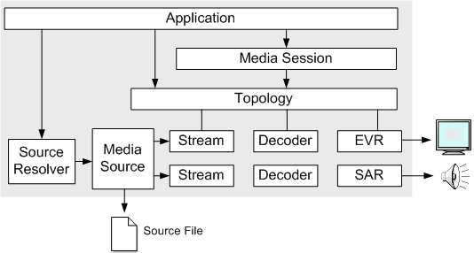

This tutorial shows how to play media files using the Media Session object.
Before reading this topic, you should be familiar with the following Media Foundation concepts:
[!Note]
This topic does not describe how to play files that are protected by digital rights management (DRM). For information about DRM in Microsoft Media Foundation, see How to Play Protected Media Files.
Â
The following objects are used to play a media file with the Media Session:

The following is a general outline of the steps needed to play a media file using the Media Session:
Call the MFStartup function to initialize the Media Foundation platform.
Call MFCreateMediaSession to create a new instance of the Media Session.
Use the source resolver to create a media source. For more information, see Using the Source Resolver.
Create a topology that connects the media source to the EVR and SAR. In this step, the application creates a partial topology that does not include the decoders. For more information, see Creating Playback Topologies.
Call IMFMediaSession::SetTopology to set the topology on the Media Session.
Use the IMFMediaEventGenerator interface to get events from the Media Session.
Call IMFMediaSession::Start to start playback. After playback starts, you can pause it by calling IMFMediaSession::Pause, or stop it by calling IMFMediaSession::Stop.
When the application exits, release resources:
The following sections show a complete code example:
Â
Â